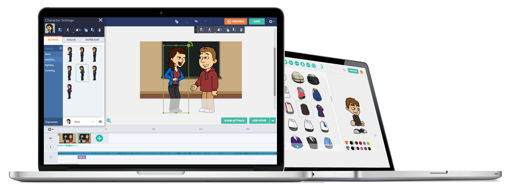

Disclaimer: This project is not affiliated with or endorsed by Vyond/GoAnimate Inc.
Wrapper: Offline is a decentralized, open-source initiative developed exclusively for archival purposes. It operates on a non-profit basis and does not accept any form of donations.